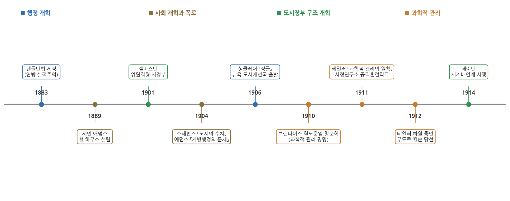
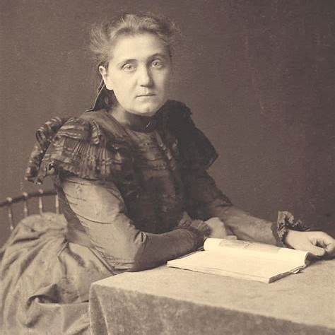
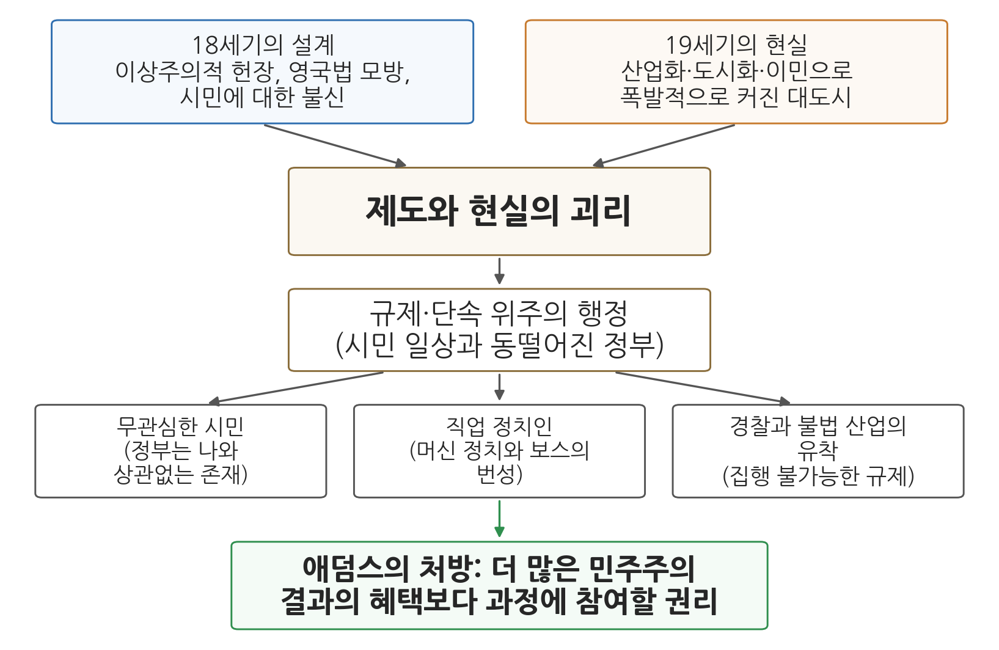

6주차 1차시. 도시문제와 과학적 관리론 (1): 도시행정의 문제
최종 수정: 2026-08-13 · 이 교재는 학기 중에도 계속 업데이트됩니다
사실 시민들에게는 정책의 혜택보다 그 과정에 참여할 권리가 더 중요했습니다. (제인 애덤스, 「지방행정의 문제」, 1904)
이 장에서 배우는 것
1900년 무렵의 시카고를 상상해 보자. 반세기 전만 해도 호숫가의 작은 마을이던 이 도시에 이제 백만이 넘는 사람이 산다. 공장 굴뚝이 하늘을 가리고, 부두와 도축장에는 폴란드어, 이탈리아어, 이디시어가 뒤섞여 들린다. 갓 대서양을 건너온 이민자 가족은 창문도 없는 공동주택 단칸방에서 살고, 골목에는 하수가 흐른다. 그런데 이 도시의 정부는 어떤가. 시의원은 자기 구역의 표를 관리하는 정당 조직의 "보스"가 사실상 임명하고, 경찰은 도박장에서 상납을 받고, 시청의 일자리는 선거를 도운 사람들에게 전리품처럼 돌아간다. 시민들이 낸 세금으로 움직이는 정부가 정작 시민의 삶과는 동떨어져 있다.
이 장면 한복판에 이 장의 주인공이 서 있다. 시카고 빈민가에 정착해 이민자들과 함께 살았던 사회개혁가 제인 애덤스(Jane Addams)다. 애덤스는 도시 정부의 부패와 무능을 그저 나쁜 사람들 탓으로 돌리지 않았다. 그는 문제의 뿌리가 제도의 설계 자체에 있다고 보았다. 100여 년 전 건국자들이 만든 정부의 틀이, 산업화와 이민으로 폭발하듯 커진 19세기 말의 도시 현실과 맞지 않게 되었다는 것이다.
이번 주부터 교재는 2부, 곧 고전적 행정이론으로 들어간다. 4주차와 5주차에서 우리는 행정학이 엽관제 개혁의 물결 속에서 태어나는 장면(펜들턴법), 그리고 윌슨과 굿나우가 정치와 행정을 구분하며 행정학의 자리를 마련하는 장면을 보았다. 이 장에서는 그렇게 태어난 행정학이 처음으로 맞닥뜨린 현장, 곧 미국 대도시의 문제를 본다. 구체적으로 다음을 배운다.
- 19세기 말에서 20세기 초 미국 도시가 겪은 산업화·도시화·이민의 충격
- 진보주의 개혁 운동이 무엇이었고 왜 일어났는지
- 애덤스의 「지방행정의 문제」가 진단한 도시행정 실패의 구조
- 머신 정치와 보스, 그리고 이에 맞선 도시정부 개혁운동(시정연구소와 행정조사운동)
- 애덤스의 통찰이 오늘날 지방행정에 던지는 물음
이 장은 하나의 질문을 따라 전개된다. "급성장한 도시에서 정부는 왜 실패했고, 개혁가들은 어디에서 답을 찾았는가?"
1.1 산업화·도시화·이민의 시대와 진보주의 운동을 본다 (2부의 문을 열며) → 1.2 애덤스의 「지방행정의 문제」를 원전으로 읽는다 → 1.3 머신 정치에 맞선 도시정부 개혁운동을 본다 (시정연구소와 행정조사운동) → 1.4 오늘날의 지방행정과 도시 문제로 연결한다.
1.1 산업화·도시화·이민의 시대: 고전적 행정이론의 무대
2부의 문을 열며: 도시문제에서 행정국가까지
교재의 2부(6-9주차)가 다루는 고전적 행정이론은 책상 위에서 태어난 이론이 아니다. 그것은 도시화와 산업화가 낳은 구체적인 문제들에 대한 응답이었다. 이 시기의 흐름을 미리 그려 보면 이렇다. 먼저 급성장한 도시에서 정부가 실패하고, 그 실패를 고치려는 개혁 운동 속에서 행정의 효율성과 운영의 합리성을 강조하는 과학적 관리론이 등장한다(6주차). 이어서 규칙, 위계, 전문성에 기반한 조직 원리인 관료제가 행정의 예측가능성과 책임성을 높이는 제도로 자리 잡고(7주차), 국가 기능이 확장되면서 행정국가가 제도화된다(9주차). 이 장은 그 첫 장면, 곧 도시의 위기에서 시작한다.
폭발하는 도시
19세기 후반 미국 도시의 성장은 이전의 어떤 도시 성장과도 달랐다. 애덤스의 표현을 빌리면, 18세기의 도시가 하인살이, 가족 간의 정, 도제 관계처럼 인간적이고 점진적인 유대를 따라 시골 사람들을 끌어들였다면, 19세기의 도시는 산업과 상업의 집중이라는 순전히 비인격적인 이해관계가 수많은 사람을 갑자기 불러 모았다. 여기에 유럽 각지에서 온 이민자들이 물밀듯이 더해졌다. 이들은 고향의 오래된 사회적 관계와 전통을 끊고 낯선 대도시에 던져진 사람들이었다.
사람은 폭증했는데 이들을 받아 낼 정부의 그릇은 100여 년 전에 만들어진 그대로였다. 상하수도, 위생, 주택, 아동노동, 산업재해 같은 새로운 문제가 쏟아졌지만, 도시의 헌장(charter, 도시 정부의 구성과 권한을 정한 기본 규범)은 이런 일을 정부가 할 일로 상정하지 않았다. 그 빈틈을 파고든 것이 다음 절에서 볼 머신 정치였고, 그 전체 상황을 고발한 말이 "미국 도시의 수치(the shame of the cities)"였다.
진보주의 운동: 좋은 정부는 가능하다
이 위기에 맞선 개혁의 물결을 진보주의(progressivism) 운동이라 부른다. "진보"라는 말은 원래 인간의 조건은 무한히 개선될 수 있다는 종교적 관념에서 나왔는데, 19세기 말에 이르면 계층 사이의 상호 책임을 정부와 사회 제도를 통해 실현하려는 태도를 뜻하게 되었다.
진보주의는 크게 보아 사회진화론에 대한 반발이었다. 사회진화론은 다윈의 생물학적 진화 개념을 인간 사회와 경제정책에 적용한 사상으로, 미국에서는 "자연선택"과 "적자생존"을 사회과학에 옮겨 온 영국인 허버트 스펜서의 영향이 컸다. 미국의 사회진화론자들은 정부 개입을 전면 거부하고 가난한 사람은 스스로 살아남아야 한다는 입장부터, 빈곤층을 일정 수준까지만 교육해 하인이나 공장 노동자로 쓰자는 인종적·계급적 발전론까지 다양한 스펙트럼을 보였다. 진보주의 운동은 이런 사고에 대한 해독제였다. 빈곤과 부패는 자연의 법칙이 아니라 고칠 수 있는 제도의 문제라는 것이다.
진보주의 운동(progressive movement)은 19세기 말에서 20세기 초 미국에서 일어난 광범위한 개혁 운동이다. 과학적 지식과 전문성을 사회 개선에 적용할 수 있고, 시민의 민주적 참여를 넓히면 통치 제도를 고칠 수 있다는 믿음을 공유했다. 각 개혁 집단이 겨냥한 정부 수준과 정책은 서로 달랐지만, "좋은 정부는 가능하다", 그리고 "민주주의의 문제를 치유하는 방법은 더 많은 민주주의다"라는 신념이 공통분모였다.
진보주의자들은 국가 차원에서 공무원제도 개혁, 직접 예비선거(direct primary), 국민발안(initiative), 국민투표(referendum), 소환제(recall)를 도입했고, 지방 차원에서는 위원회형 정부와 의회-시 관리자형(council-manager) 정부를 확산시켰다. 정치적으로는 시어도어 루즈벨트를 앞세운 진보당(Progressive Party)의 도전으로 공화당이 갈라졌고, 그 분열 속에서 1912년 민주당의 우드로 윌슨이 대통령에 당선되었다. 우리가 4주차에서 만난 그 윌슨이다. 윌슨은 은행 개혁, 독점 금지, 기업 규제 등 많은 진보적 정책을 받아들였다. 이러한 진보주의의 흐름이 신생 학문이던 행정학이 자랄 토양을 마련해 주었다.
개혁의 불을 지핀 또 하나의 세력은 "머크레이커(muckrakers)"라 불린 폭로 언론인들이었다. 오물을 파헤치는 사람들이라는 뜻의 이 별명처럼, 이들은 도시 정치 조직의 부패와 이민 노동자의 비참한 생활을 지면에 드러냈다. 링컨 스테펀스는 『도시의 수치(The Shame of the Cities)』(1904)에서 대도시의 부패를 고발했고, 아이다 타벨은 록펠러의 석유 독점을 파헤쳐 스탠더드 오일 해체의 물꼬를 텄으며, 업튼 싱클레어는 『정글(The Jungle)』(1906)에서 도축업의 불결한 실태를 폭로해 같은 해 순수식품·의약품법 제정을 이끌어 냈다.

그림 6-1은 이 장과 다음 차시에 등장하는 사건들을 한 줄에 놓은 연표다. 색은 개혁의 갈래를 나타낸다. 파랑은 행정 개혁, 갈색은 사회 개혁과 폭로, 초록은 도시정부의 구조 개혁, 주황은 과학적 관리의 흐름이다. 읽는 법은 간단하다. 왼쪽 끝의 펜들턴법(1883, 4주차)에서 출발해 오른쪽으로 갈수록, 개혁의 무게중심이 "누가 공직에 앉는가"에서 "정부를 어떻게 운영하는가"로 옮겨 가는 것을 볼 수 있다. 1904년 애덤스의 연설과 스테펀스의 고발이 도시 문제를 공론장에 올렸고, 1906년 이후 시정연구소가, 1910년대에는 테일러의 과학적 관리가 그 답으로 떠올랐다. 이 장의 나머지와 다음 차시는 이 연표를 왼쪽에서 오른쪽으로 걸어가는 여정이다.
헐 하우스의 제인 애덤스
부패 통제가 공무원제 개혁과 도시 헌장 정비로 성과를 내는 동안, 빈민의 삶을 돌보는 개혁은 별도의 흐름으로 전개되었다. 영국에서 시작된 인보관 운동(settlement movement)이 그것이다. 상류층 개혁가들이 빈민 지역에 직접 들어가 살면서 주민들과 공동체 생활을 함께하는 방식인데, 미국에서는 제인 애덤스(1860-1935)가 1889년 시카고에 세운 헐 하우스(Hull House)가 대표적 모델이 되었다.
헐 하우스는 오늘날의 눈으로 보면 민간이 운영한 정책 실험실이었다. 이 지역 최초의 공원과 공공부엌을 만들고, 이민자를 위한 귀화 수업과 특수교육 수업을 열었으며, 소년법원과 직업 알선소 설립에도 기여했다. 애덤스는 이후 미국 사회사업을 이끄는 인물이 되었고 1931년 노벨평화상을 받았다. 우리가 이 장에서 읽을 텍스트는 그가 1904년에 발표하고 이듬해 학술지 American Journal of Sociology에 실린 연설 「지방행정의 문제(Problems of Municipal Administration)」다. 빈민가에서 15년을 산 사람이 도시 정부의 실패를 어떻게 진단했는지, 이제 원전으로 직접 읽어 보자.
1.2 원전 강독: 애덤스, 「지방행정의 문제」

인물 · 제인 애덤스(Jane Addams, 1860-1935)미국의 사회개혁가·평화운동가. 1889년 시카고에 인보관 헐하우스(Hull House)를 공동 설립해 이민자·노동자 지원과 도시 개혁의 거점으로 키웠고, 1931년 미국 여성 최초로 노벨평화상을 받았다.
대표 저술: 『민주주의와 사회윤리(Democracy and Social Ethics)』(1902), 「지방행정의 문제」(1904 연설)
사진: 1890년대의 애덤스 (퍼블릭 도메인)
애덤스의 연설은 미국인들이 가장 존경하는 건국자 토머스 제퍼슨을 기리는 자리에서 시작한다. 그런데 그 존경의 대상을 향해 애덤스는 대담한 주장을 편다. 도시 정부 실패의 뿌리가 바로 그 건국 세대의 설계에 있다는 것이다.
강독 1: 도시의 수치, 원인은 18세기의 이상에 있다
"오늘날 우리는 시 행정의 공공연한 실패, 이른바 '미국 도시의 수치'라 불리는 문제의 원인을 다른 곳에서 찾기 시작했습니다. 18세기의 이상이 시대에 맞지 않게 되었고, 그 이상이 만들어 낸 제도가 무너졌기 때문일 것입니다. 살아 숨 쉬며 성장하는 인간 사회를 다루면서 역사책에만 기대는 탁상공론에는 처음부터 한계가 있었던 것입니다. (…) 그들의 이상주의는 현실 경험을 두려워하는 이상주의였습니다. 그래서 미국 도시의 창건자들은 자치하는 시민이 겪을 수밖에 없는 어려움과 실수를 외면한 채, 시민이 오직 정의롭고 올바른 길만 걸으리라 믿어 의심치 않았습니다."
무슨 말인가. 당시 사람들은 도시 정부의 부패를 나쁜 정치인, 무지한 이민자, 타락한 유권자 탓으로 돌리곤 했다. 애덤스는 원인의 방향을 뒤집는다. 문제는 사람이 아니라 설계라는 것이다. 건국 세대는 책으로 배운 원리에서 정부를 연역해 냈고, 자치가 실제로 굴러갈 때 시민들이 겪을 시행착오를 설계에 반영하지 않았다. "모든 인간은 자유롭고 평등하게 태어났다"는 아름다운 문장을 쓴 사람들이, 정작 그 인간들이 부딪히며 배워 갈 과정은 준비하지 않았다는 지적이다.
왜 중요한가. 이것은 행정 실패를 도덕의 문제("나쁜 사람들")가 아니라 제도의 문제("맞지 않는 설계")로 보는 관점의 전환이다. 도덕적 비난은 사람을 갈아치우는 데서 멈추지만, 제도 진단은 설계를 고치는 개혁으로 이어진다. 이 관점의 전환이야말로 이 시대 개혁 운동 전체, 나아가 행정학이라는 학문의 출발점에 놓인 태도다.
강독 2: 왕도 귀족도 없는 나라가 영국법을 베끼다
"18세기의 이상주의자들은 역사의 뿌리가 갖는 힘을 몰랐고, 자치 정부에도 고유한 발전의 역사가 있다는 사실을 간과했습니다. 그들은 소심하게도 영국법을 원형으로 삼았습니다. 영국법의 뿌리는 주권자와 신민, 곧 법을 만드는 자와 법의 통제를 받는 자 사이의 관계에 있으며, 민중의 자발적인 삶보다는 지배자의 특권과 재산권을 보호하는 데 치중해 왔습니다. 새로운 나라에는 왕도 귀족도 없었는데, 그들은 국왕의 압제에 맞선 귀족들의 투쟁이 새겨진 법과 관습을 태연하게 가져왔습니다. (…) 그들은 공동체를 유지하기 위해 처벌과 강압, 군율의 잔재에 기댔습니다. 오늘날 우리 도시 행정의 수많은 문제는 바로 이 과거의 유물, 곧 우리의 초기 민주주의가 시민 사회의 역량과 민의의 힘에 대한 깊은 믿음이 아니라 막연한 도덕적 낭만주의에서 출발했다는 사실에서 비롯되었는지도 모릅니다."
무슨 말인가. 미국의 초기 제도는 백지에서 그려진 것이 아니라 영국법을 본떠 만들어졌다. 그런데 영국법은 지배자와 피지배자를 전제하고 지배자의 특권과 재산을 지키는 데 발달해 온 법이다. 왕이 없는 나라가 왕을 견제하던 법을 가져왔으니, 그 법에는 시민을 자치의 주체로 믿는 정신이 아니라 시민을 통제 대상으로 의심하는 정신이 배어 있었다. 애덤스는 이 대목 바로 앞에서 흥미로운 사고 실험도 내놓는다. 만약 우리 시대의 선각자들이 자치 정부를 설계한다면, 이들은 마을 총회, 장인 길드, 중세 자유 도시처럼 일상과 정치가 결합되어 있던 원초적 자치 조직들을 연구했으리라는 것이다.
왜 중요한가. 제도는 수입될 때 그 제도가 자란 역사적 맥락까지 함께 실려 온다는 통찰 때문이다. 다른 시대, 다른 사회의 제도를 형식만 가져오면 새 토양의 현실과 어긋난다. 이는 5주차에서 윌슨이 유럽의 행정 기술을 배우되 "미국화"해야 한다고 강조했던 문제의식과 정확히 만나는 지점이며, 오늘날 개발도상국의 제도 이식 논쟁이나 한국이 외국 제도를 도입할 때마다 되풀이되는 "토착화" 논쟁의 원형이기도 하다.
강독 3: 폭발하는 도시, 낡은 헌장
"도시가 완전히 새로운 기반 위에서 경이로운 속도로 성장하지만 않았다면, 이 모든 탁상공론식 계획도 시골 마을에서처럼 그럭저럭 굴러갔을지 모릅니다. 19세기에는 산업과 상업의 집중이라는 순전히 비인격적인 이해관계가 수많은 사람을 갑자기 도시로 불러 모았습니다. (…) 여기에 더해 미국 도시에는 이민자들이 물밀듯이 밀려왔습니다. 인류의 역사만큼 오래된 사회적 관계를 끊고 온 사람들이었습니다. 시골 출신이든 이민자든, 이 새로운 도시민들은 자신들의 사회적 필요를 담아 줄 새롭고 활기찬 시민 공동체에 기꺼이 적응할 준비가 되어 있었습니다. 하지만 세심하게 만들어진 도시 헌장은 인구가 폭발하는 지점에서 터져 나오는 이러한 요구를 담아내지 못했습니다."
무슨 말인가. 설계 결함이 있는 제도라도 변화가 느린 곳에서는 그럭저럭 버틴다. 문제는 규모와 속도다. 산업화가 낯선 사람들을 한꺼번에 도시로 불러 모으고, 이민이 거기에 겹치면서, 주택·위생·노동·교육에 대한 요구가 폭발했다. 애덤스가 강조하는 대목은 새 도시민들이 문제였다는 통념의 부정이다. 이들은 새로운 공동체에 적응할 준비가 되어 있었다. 준비가 안 된 쪽은 오히려 정부였다.
왜 중요한가. 행정 수요와 행정 능력 사이의 간극이라는, 행정학의 오랜 주제가 여기서 처음 뚜렷하게 모습을 드러내기 때문이다. 사회가 만들어 내는 문제의 양과 질이 정부가 처리할 수 있는 수준을 넘어설 때 무슨 일이 일어나는가. 이 질문은 이후 행정국가의 성장(9주차)을 설명하는 열쇠가 되고, 오늘날에도 수도권 집중이나 지방소멸처럼 인구 변동이 행정의 그릇을 시험하는 장면마다 되살아난다.
강독 4: 단속하는 정부, 등 돌린 시민, 그리고 보스
"그 결과 오늘날 미국의 시 행정은 각종 규제와 단속 위주의 행정으로 전락하고 말았습니다. 행정 관료를 가장 직접 마주치는 사람들은 단속이 필요한 범법자들, 절박한 도움이 필요한 가난하고 의존적인 사람들, 아니면 반대로 아무 열정도 불러일으키지 못하는 정부에 세금 내기를 아까워하며 이를 피하려는 사람들뿐입니다. 이런 기계적인 통치 방식과 민주주의의 자발적 충동이 어긋나면 본능적인 반발이 일어나고, 필연적으로 두 부류의 인간이 만들어집니다. 바로 '무관심한 시민'과 이른바 '직업 정치인'입니다. 앞의 사람은 자신이 범법자가 아니니 정부가 하는 일은 자신과 상관없다고 여기며 그저 간섭받지 않기만을 바랍니다. 뒤의 사람은 현실 모르는 탁상공론가들이 만든 규칙 따위는 가볍게 무시하고, 그 너머에 있는 대중의 진짜 욕망에 호소하며 상황에 쉽게 적응합니다. 그는 '민중의 친구'이자 그들의 '대변인'이 됩니다."
무슨 말인가. 시민의 필요를 채워 주지 못하는 정부는 결국 단속하고 규제하는 일만 하게 된다. 그런 정부를 평범한 시민이 만날 일은 없으니 시민은 정부에 무관심해진다. 그 빈자리를 파고드는 것이 직업 정치인, 곧 머신 정치의 보스다. 애덤스는 이어지는 대목에서 민중의 언어를 예리하게 포착한다. 평범한 사람들이 "그 사람들"이라 부르는 것은 통치는 하지만 자신들을 이해하지 못하는 높은 사람들이고, "그 사람"이라 부르는 것은 알아들을 수 없는 시청에서 자기 사정을 대변해 주는 시의원이라는 것이다. 공식 정부는 3인칭 복수의 남이고, 부패했다는 보스는 3인칭 단수의 내 편이다.
왜 중요한가. 머신 정치가 왜 그토록 오래 살아남았는지를 설명해 주기 때문이다. 보스는 유권자를 매수한 것이 아니라, 정부가 외면한 필요(일자리, 급한 생계 지원, 관청 일 처리)를 실제로 채워 주었다. 부패는 수요가 있는 곳에 공급된 것이다. 그렇다면 보스를 잡아넣는 것만으로는 문제가 풀리지 않는다. 정부가 그 필요를 채우는 정부로 바뀌어야 한다. 이것이 애덤스 진단의 핵심 논리다.
강독 5: 경찰과 범죄의 동맹
"군사 사회의 잔재인 억압적인 법률을 집행하는 일이, 민주주의 사회에서는 결국 정치적 '연줄'이나 '빽'으로 자리를 얻은 사람들의 손에 맡겨집니다. 법의 규제를 받아야 할 사람들과 같은 편이고 그들을 동정하는 사람들이 법을 집행해야 하는 것입니다. 이 모순은 거의 필연적으로 한 가지 결과를 낳습니다. 경찰 당국이 악과 범죄의 동맹으로 변질되는 것입니다. 미국 대도시 대부분에서 경찰과 도박을 비롯한 불법 산업의 관계를 보면 이를 쉽게 알 수 있습니다. (…) 결국 우리는 '악이 권력의 비호 아래 번성하는 비정상적인 상황'에 이르게 됩니다."
무슨 말인가. 여기서 애덤스는 부패의 메커니즘을 해부한다. 시민의 실생활과 동떨어진 엄격한 규제(예컨대 당시의 각종 풍속 단속 조례)는 애초에 집행이 불가능하다. 집행 불가능한 법은 사라지지 않고 뇌물의 가격표가 된다. 게다가 그 법을 집행하는 자리는 실적이 아니라 정치적 연줄로 채워지니, 단속하는 자와 단속받는 자가 한 패가 되는 것은 시간문제다. 부패는 개인의 일탈이 아니라 제도가 만들어 낸 균형 상태라는 것이다.
왜 중요한가. 이 분석은 4주차에서 본 엽관제 비판과 포개진다. 공직이 선거 승리의 전리품으로 배분되는 한, 법 집행의 공정성은 구조적으로 불가능하다. 그래서 개혁가들은 두 방향으로 움직였다. 하나는 사람을 바꾸는 개혁, 곧 실적주의 임용이고, 다른 하나는 규범을 바꾸는 개혁, 곧 집행 가능한 규칙의 재설계다. 지켜질 수 없는 규제가 부패를 낳는다는 통찰은 오늘날 규제 개혁 논의에서도 그대로 유효하다.
강독 6: 혜택보다 참여, 애덤스의 처방
"우리는 다양한 시 행정 서비스를 이룩해 왔습니다. 하지만 이는 임명된 위원회나 특별 권한을 받은 보건 위원회, 헌장의 한계를 넘어선 시장의 추진력 덕분에, 말하자면 은밀하게 달성된 것들입니다. 시민들은 이런 정책에 직접 투표한 적이 없고, 자유로운 토론을 통해 얻을 수 있었던 민주주의의 교육과 성장의 기회를 놓쳤습니다. 사실 시민들에게는 정책의 혜택보다 그 과정에 참여할 권리가 더 중요했습니다. (…) 시민의 힘을 억누르기보다 풀어주는, 낡은 유형의 정부와는 구별되는 진정한 민주 정부를 신뢰할 수 있다면, 우리는 비로소 민주주의가 무엇인지 알기 시작할 것입니다. 그때 우리의 시 행정은 마침내 아리스토텔레스가 꿈꾸었던 이상적인 도시, 곧 '사람들이 고귀한 목적을 위해 더불어 살아가는 곳'을 실현할 자유를 얻게 될 것입니다."
무슨 말인가. 애덤스 시대에도 좋은 행정 서비스가 없지는 않았다. 문제는 그것이 시민의 토론과 결정을 거치지 않고 유능한 소수의 손으로 "은밀하게" 달성되었다는 점이다. 애덤스에게 이것은 절반의 성공일 뿐이다. 시민이 과정에서 배제된 채 결과만 받는다면, 민주주의라는 학교의 수업 기회를 통째로 잃는 것이기 때문이다. 그래서 그의 처방은 행정을 잘하는 소수를 세우는 것이 아니라, 시민의 힘을 풀어 주는 정부, 곧 더 많은 민주주의다.
왜 중요한가. 이 대목은 이 장의 뒷부분에서 볼 또 다른 개혁 노선, 곧 전문가의 조사와 능률을 앞세운 시정연구소의 노선과 긴장을 이룬다. 행정을 좋게 만드는 길은 전문성인가 참여인가. 이 물음은 행정학 100년을 관통하며, 11주차의 왈도와 12주차의 신행정학에서 정면으로 다시 제기된다.

그림 6-2는 지금까지 읽은 여섯 대목을 하나의 인과 구조로 정리한 것이다. 위에서 아래로 읽는다. 18세기의 설계(왼쪽 위)와 19세기의 현실(오른쪽 위)이 어긋나면서 제도와 현실의 괴리가 생기고, 그 괴리가 규제·단속 위주의 행정을 낳는다. 그 결과가 아래 세 상자, 곧 무관심한 시민, 머신 정치의 번성, 경찰과 불법 산업의 유착이다. 맨 아래 초록 상자가 애덤스의 처방이다. 이 그림에서 알 수 있는 것은 애덤스의 논증이 도덕적 비난이 아니라 원인과 결과의 사슬로 짜인 제도 진단이라는 점, 그리고 처방이 사슬의 마지막 고리(부패 단속)가 아니라 첫 고리(제도와 현실의 괴리)를 겨냥한다는 점이다.
1.3 도시정부 개혁운동: 머신과 보스에서 시정연구소까지
머신 정치와 보스
애덤스가 "직업 정치인"이라 부른 존재를 당시 미국인들은 보스(boss)라 불렀고, 보스가 이끄는 정당 조직을 머신(machine), 곧 정치 기계라 불렀다. 기계라는 이름답게 머신은 정확하게 작동했다. 구역별 조직책이 이민자의 정착을 돕고, 일자리를 알선하고, 곤경에 빠진 가족에게 석탄과 빵을 보내고, 그 대가로 선거일에 표를 거두어들였다. 모인 표는 시청의 일자리와 이권 계약으로 바뀌어 조직을 다시 살찌웠다. 뉴욕의 태머니 홀(Tammany Hall)이 대표적인 머신이었고, 19세기 후반 이 조직을 이끌며 뉴욕시 재정을 조직적으로 빼돌린 보스 트위드(William M. Tweed)는 머신 정치의 악명을 상징하는 이름이 되었다.
머신 정치(machine politics)는 정당 조직이 일자리·구호·이권 같은 물질적 유인을 나누어 주고 그 대가로 표를 동원하여 도시 정부를 장악하는 정치 방식이다. 조직의 정점에 서서 공직 임명과 이권 배분을 좌우하는 실력자를 보스(boss)라 부른다. 머신은 공식 제도 바깥에 있으면서도 사실상 도시 정부를 움직였다.
주의할 점은 애덤스의 시각이 단순한 머신 규탄이 아니라는 것이다. 원전에서 보았듯 애덤스는 보스가 "적어도 대중의 마음이 존재한다는 사실은 알고 있다"고 썼다. 머신은 정부가 비운 자리를 채운 그림자 복지 기구였다. 따라서 머신을 없애려면 고발과 처벌만으로는 부족하고, 정부가 시민의 필요에 응답하는 구조를 만들어야 한다.
구조를 바꾸다: 위원회형 정부와 시지배인제
개혁가들이 첫 번째로 손댄 것은 도시 정부의 구조였다. 1900년 허리케인으로 도시가 무너진 텍사스주 갤버스턴은 1901년, 시장과 시의회 대신 소수의 위원이 입법과 집행을 함께 책임지는 위원회형(commission) 정부를 도입해 재건에 성공했고, 이 "갤버스턴 플랜"은 1910년대에 수백 개 도시로 번졌다. 이어서 등장한 것이 의회-시 관리자형, 곧 시지배인제(council-manager plan)다. 선출된 시의회가 정책을 정하고, 행정 운영은 의회가 채용한 전문 경영인인 시지배인(city manager)에게 맡기는 방식이다. 1913년 대홍수를 겪은 오하이오주 데이턴이 1914년 이 제도를 시행한 첫 대도시가 되면서 전국적 모델로 자리 잡았다.
시지배인제의 발상을 뜯어보면 5주차에서 배운 정치-행정 이원론이 제도의 형태로 구현되어 있음을 알 수 있다. 정치(무엇을 할 것인가)는 선출된 의회가, 행정(어떻게 할 것인가)은 임용된 전문가가 맡는다. 윌슨과 굿나우의 이론이 강단의 주장에 그치지 않고 실제 도시 정부의 설계도가 된 것이다.
시정연구소와 행정조사운동
구조 개혁이 정부의 뼈대를 바꾸는 일이었다면, 정부의 일하는 방식 자체를 과학적으로 뜯어보려는 흐름도 나타났다. 1906년 뉴욕에서 도시개선국(Bureau of City Betterment)으로 출발해 이듬해 정식 발족한 뉴욕시정연구소(New York Bureau of Municipal Research)가 그 중심이었다. 시정연구소는 시 정부의 예산, 회계, 인사, 사업 집행을 실지 조사로 파헤쳐 사실과 수치를 들이대는 방식으로 개혁을 압박했다. 분노나 웅변이 아니라 장부와 통계가 무기였다. 예산을 시민이 알아볼 수 있는 문서로 만드는 근대적 예산제도 개혁이 여기서 자라났고, 1911년에는 공직훈련학교(Training School for Public Service)를 세워 행정 실무자를 체계적으로 길러 내기 시작했다. 이런 조사 기관이 미국 각 도시로 퍼져 나간 흐름을 행정조사운동(bureau movement)이라 부른다.
머신 정치의 폐해가 문제라면 답도 정치(선거, 정당)에서 찾는 것이 자연스러워 보인다. 그러나 개혁가들이 보기에 선거로 사람을 갈아치우는 개혁은 이미 여러 번 실패했다. 개혁 시장이 당선되어도 시 정부의 일하는 방식이 그대로면 몇 년 뒤 머신이 되돌아왔기 때문이다. 그래서 이들은 누가 앉느냐보다 어떻게 일하느냐를, 곧 예산·회계·인사의 제도와 기술을 바꾸는 쪽에 승부를 걸었다. 행정을 정치에서 떼어 내 과학의 대상으로 삼으려 한 이 선택이, 신생 학문 행정학에 연구거리와 일자리와 존재 이유를 한꺼번에 제공했다. 시정연구소가 "행정학의 실험실"이라 불리는 이유다.
행정조사운동은 행정학의 역사에서 각별한 의미를 갖는다. 윌슨이 1887년에 "관리의 과학"을 요구했다면, 시정연구소는 그 과학을 실제로 만들기 시작한 곳이다. 그리고 이들이 찾던 과학에 때마침 이름과 방법을 제공한 것이, 다음 차시에서 만날 프레더릭 테일러의 과학적 관리였다.
애덤스와 시정연구소는 같은 진보주의 진영에 속했지만 강조점이 달랐다. 애덤스는 시민의 참여와 정부의 사회적 기능 확장에서, 시정연구소는 전문가의 조사와 능률에서 답을 찾았다. 전자는 민주성의 노선, 후자는 전문성의 노선이라 부를 수 있다. 이후 행정학의 주류가 된 것은 후자였고, 전자의 문제의식은 한참 뒤에야 신행정학(12주차)과 함께 되돌아온다. 도시 개혁을 "능률의 승리"로만 기억하면 이 시대의 절반을 놓치는 셈이다.
1.4 현대 행정에의 함의: 지방행정과 도시 문제
애덤스의 연설은 120년 전 미국 도시 이야기지만, 그 진단의 틀은 오늘날 한국의 지방행정에 대어 보아도 놀랄 만큼 잘 들어맞는다. 네 가지만 짚어 보자.
첫째, 제도와 현실의 간극이라는 문제다. 애덤스는 형식적으로는 훌륭한 헌장이 현실의 필요를 담지 못할 때 정부가 시민에게서 멀어진다고 보았다. 한국의 지방자치도 1991년 지방의회 부활 이후 30년 넘게 제도의 뼈대를 갖추어 왔지만, 제도가 있다는 것과 제도가 주민의 삶에 응답한다는 것은 다른 문제다. 조례와 위원회가 갖추어져 있어도 주민이 "그 사람들"의 일로 느낀다면, 애덤스가 본 무관심한 시민은 오늘의 낮은 지방선거 관심으로 되살아난다.
둘째, 과정 참여의 가치다. "혜택보다 과정에 참여할 권리가 더 중요했다"는 애덤스의 문장은 오늘날 참여 제도의 이론적 원형이라 할 만하다. 주민이 예산 편성 과정에 직접 의견을 내는 주민참여예산제도, 시민들이 숙의를 거쳐 정책 권고를 내놓는 공론화(2017년 신고리 5·6호기 공론화가 대표적 사례다) 같은 장치들은, 결정의 질만이 아니라 결정 과정 자체의 민주적 가치를 겨냥한다는 점에서 애덤스의 처방과 같은 계보에 있다. 물론 참여 제도가 형식적 의견 수렴에 그친다면, 그것이야말로 애덤스가 비판한 "은밀하게 달성된" 행정의 현대판이 될 것이다.
셋째, 단속 행정에서 서비스 행정으로의 전환이다. 애덤스는 규제와 단속 위주의 행정이 시민 다수를 정부에서 멀어지게 한다고 보았다. 복지 사각지대를 기다리지 않고 찾아 나서는 발굴 행정, 단속 실적이 아니라 문제 예방을 성과로 보는 관점의 전환은 이 진단의 연장선에 있다.
넷째, 집행 가능성과 투명성이다. 지켜질 수 없는 규제가 유착을 낳는다는 강독 5의 통찰, 그리고 산업과 정부의 관계를 감출수록 불신이 자란다는 애덤스의 경고는, 오늘날 규제 정비와 이해충돌 방지, 정책 과정 공개 제도가 왜 필요한지를 설명해 준다.
정리하면, 애덤스가 남긴 물음은 이것이다. 좋은 지방정부란 시민을 잘 관리하는 정부인가, 시민의 힘을 풀어 주는 정부인가. 다음 차시에서 우리는 정반대 방향에서 출발한 대답, 곧 관리 그 자체를 과학으로 만들려 한 테일러를 만난다. 두 대답의 긴장은 이 과목이 끝날 때까지 계속된다.
요약
19세기 말에서 20세기 초 미국 대도시는 산업화·도시화·이민의 삼중 충격 속에서 심각한 행정 실패를 겪었고, 이는 "미국 도시의 수치"로 공론화되었다. 이에 맞선 진보주의 운동은 사회진화론에 대한 반발로서, 과학과 전문성 그리고 더 많은 민주주의로 좋은 정부를 만들 수 있다고 믿었으며, 머크레이커의 폭로와 인보관 운동이 그 흐름을 뒷받침했다. 헐 하우스를 세운 제인 애덤스는 「지방행정의 문제」(1904)에서 도시행정 실패의 원인을 사람의 타락이 아니라 제도의 설계에서 찾았다. 18세기의 이상주의적 헌장은 영국법을 모방해 시민을 불신하는 정신을 물려받았고, 폭발하는 19세기 도시의 필요를 담지 못했다. 그 괴리가 규제·단속 위주의 행정을 낳았고, 무관심한 시민과 직업 정치인(머신 정치), 경찰과 불법 산업의 유착이 그 결과였다. 애덤스의 처방은 시민의 힘을 풀어 주는 더 많은 민주주의, 곧 혜택보다 과정에 참여할 권리였다. 한편 개혁 운동은 위원회형 정부와 시지배인제 같은 구조 개혁, 그리고 뉴욕시정연구소가 이끈 행정조사운동으로 이어져 행정학의 실무적 토대를 놓았다. 참여를 앞세운 애덤스의 노선과 능률을 앞세운 시정연구소의 노선은 같은 진보주의 안의 두 갈래로, 그 긴장은 오늘날 지방행정의 참여 제도와 성과 관리 논의에까지 이어진다.
토론·복습 문제
6-1. (서술형 연습) 애덤스가 진단한 미국 도시행정 실패의 원인을 "제도와 현실의 괴리"를 중심으로 설명하고, 그 진단이 머신 정치의 지속을 어떻게 설명해 주는지 논의하시오. (힌트: 18세기의 설계, 19세기의 현실, 단속 위주 행정, 보스가 채운 빈자리의 순서로 논지를 구성해 보라.)
6-2. (원전 해석) 다음 구절을 읽고 물음에 답하시오. "사실 시민들에게는 정책의 혜택보다 그 과정에 참여할 권리가 더 중요했습니다." 애덤스는 왜 좋은 결과를 "은밀하게" 달성하는 것으로 충분하지 않다고 보았는가. 이 구절이 전제하는 민주주의관을 설명하고, 오늘날의 참여 제도 한 가지를 골라 이 관점에서 평가해 보시오.
6-3. (개념 비교) 애덤스의 개혁 노선과 시정연구소(행정조사운동)의 개혁 노선을 목표, 방법, 시민의 역할이라는 세 기준에서 비교하시오. 두 노선이 충돌할 수 있는 상황의 예를 하나 들어 보시오.
6-4. (현대 적용) 애덤스는 규제·단속 위주의 행정이 "무관심한 시민"을 만든다고 보았다. 여러분이 사는 지역의 행정 서비스 가운데 주민이 정부를 "내 일상과 상관없는 존재"로 느끼게 만드는 사례와, 반대로 정부를 가깝게 느끼게 만드는 사례를 하나씩 찾고, 그 차이가 어디에서 오는지 애덤스의 논지로 설명해 보시오.